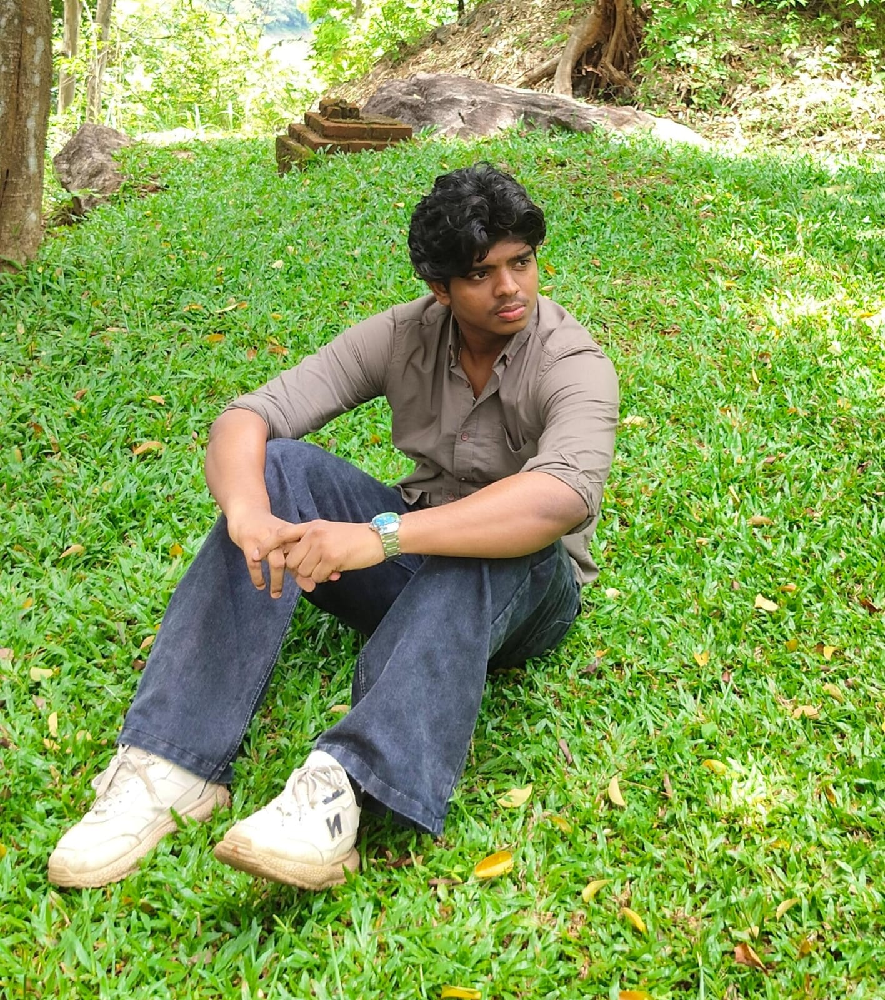

vallathukaran house kuttikad, Chalakudy, thrissur | pincode: 680724
9526823152 | godwinjoy478@gmail.com
A motivated B.Tech student in Electronics & Instrumentation Engineering seeking to leverage strong fundamentals in circuit design, sensors, measurement systems, and embedded systems to contribute effectively to a dynamic organization and gain hands-on industry experience.
Electronics and Instrumentation | Pursuing
Federal Institute of Science and Technology (FISAT), Mookkannoor, Angamaly, Kerala
Higher secondary education
Build a simple resume about my personal details for assisting for clients
Languages: English, Malayalam